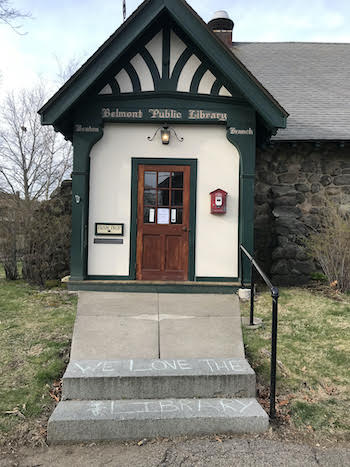

Volunteer
The E. C. Benton Library is not looking for volunteers while the Belmont Public Library is using the Benton building. We will be looking for new and returning volunteers when we reopen in January of 2026.
The Benton Library is staffed by volunteers from all walks of life; no professional library experience is required. We can use just about any talent you have!
New volunteers are welcome and will receive training on how to use our catalog system. Each shift has two or more volunteers so you'll always have company. The shifts are 2 1/2 to 3 hours in length. Some of our volunteers come every week for the same shift, some volunteers come as needed; we set up our schedule a month in advance.
We're happy to have all the help we can get. We encourage new volunteers to join.